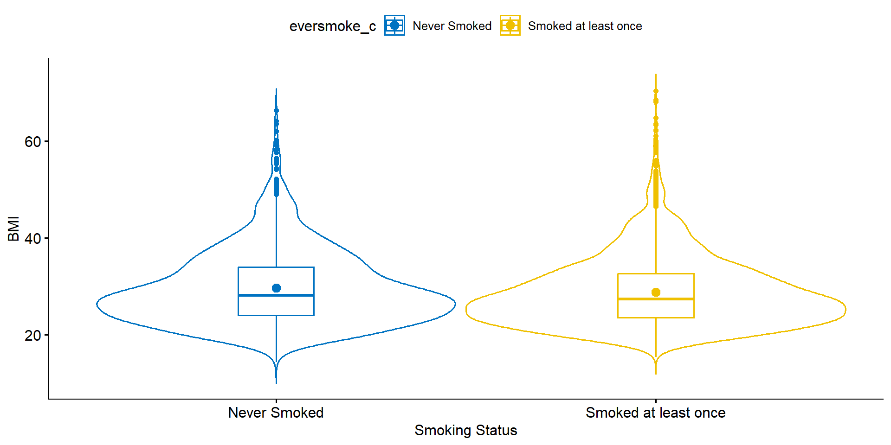

Show the code

2025-10-13
\[ y_{ij} = \mu_{j} + \epsilon_{ij} \qquad \qquad \epsilon_{ij} \overset{iid}{\sim} \mathcal{N}(0,\sigma^{2}) \]
\(H_{0}: \mu_{1} - \mu_{2} = 0\): There is no difference in the averages between groups.
\(H_{A}: \mu_{1} - \mu_{2} \neq 0\): There is a difference in the averages between groups.
We would like to know, is there convincing evidence that the average BMI differs between those who have ever smoked a cigarette in their life compared to those who have never smoked?
Nitty gritty detail
For the purposes of learning, you will be writing out each step in the analysis in depth. As you begin to master these analyses, it is natural to slowly start to blend and some steps. However it is important for you to have a baseline reference.
eversmoke_c)BMI)Smokers have on average BMI of 28.8, smaller than the average BMI of non-smokers at 29.7. Non-smokers have more variation in their weights (7.8 vs 7.3lbs), but the distributions both look normal, if slightly skewed right.
Let \(\mu_{1}\) be the average BMI for smokers, and \(\mu_{2}\) be the average BMI for non-smokers
\(H_{0}: \mu_{1} - \mu_{2} = 0\) There is no difference in the average BMI between smokers and non-smokers.
\(H_{A}: \mu_{1} - \mu_{2} \neq 0\) There is a difference in the average BMI between smokers and non-smokers.
Welch Two Sample t-test
data: BMI by eversmoke_c
t = 3.6937, df = 3395.3, p-value = 0.0002245
alternative hypothesis: true difference in means between group Never Smoked and group Smoked at least once is not equal to 0
95 percent confidence interval:
0.3906204 1.2744780
sample estimates:
mean in group Never Smoked mean in group Smoked at least once
29.67977 28.84722 There is strong evidence in favor of the alternative hypothesis. The interval for the differences (0.4, 1.3) does not contain zero and the p-value = .0002.
On average, non-smokers have a significantly higher 0.82 (0.39, 1.27) BMI compared to smokers (p=.0002).
Samples come from the same population (\(\mu_1 - \mu_2\))
Credit: Allison Horst https://allisonhorst.com/
Credit: Allison Horst https://allisonhorst.com/
Credit: Allison Horst https://allisonhorst.com/